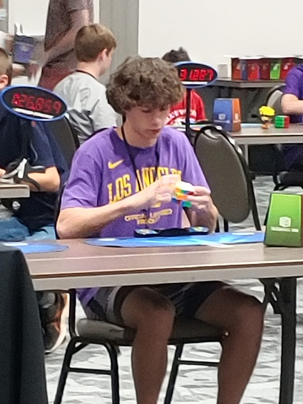
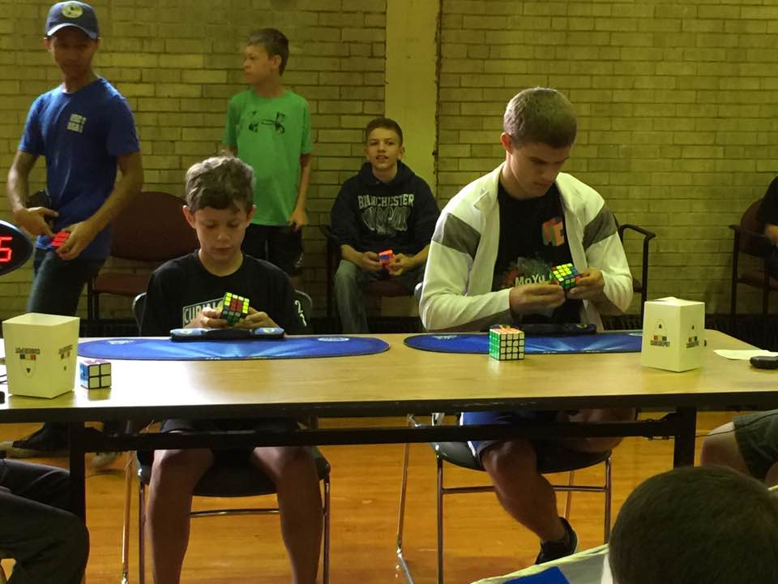
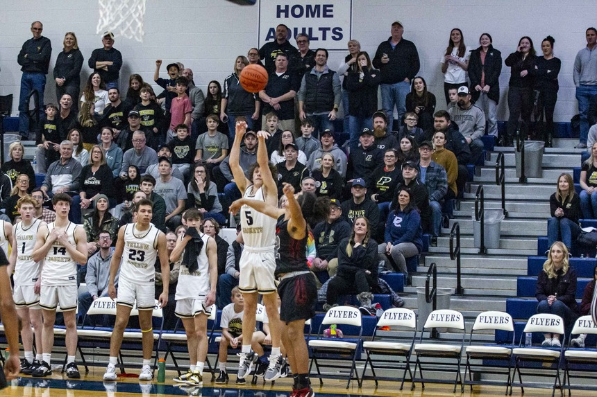
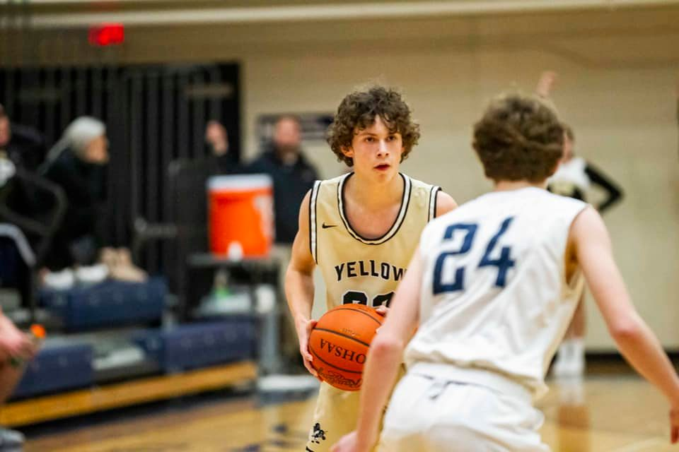

My hobbies
Things I like doing.
Cubing
I started going to Rubik's cube competitions when I was 10 years old, I went to 7 of them in 2017 and one in 2022. This was a pretty big part of me growing up because it was proof to myself that I could really do whatever I wanted.


Basketball
I started playing club basketball in 2017 aswell, a bit of a late start for most kids my age, but I enjoyed playing a lot. I got cut from the 7th grade middle school team, it was a great learning experience and allowed me to focus on my individual skill a lot more. Basketball was a great way to improve my critical and fast paced thinking, sports really are a great way to train the mind.


Gaming
I started playing video games from a very young age, Minecraft being the game that got me hooked. Since then I've logged thousands of hours on different games. I currently enjoy playing Valorant and other FPS games. Similar to basketball I found the competition and grind very enjoyable. It really suprised me how much high level esports players work their mind to stay at the top of their respected games. Esports has a lot more to it than an average person would assume.